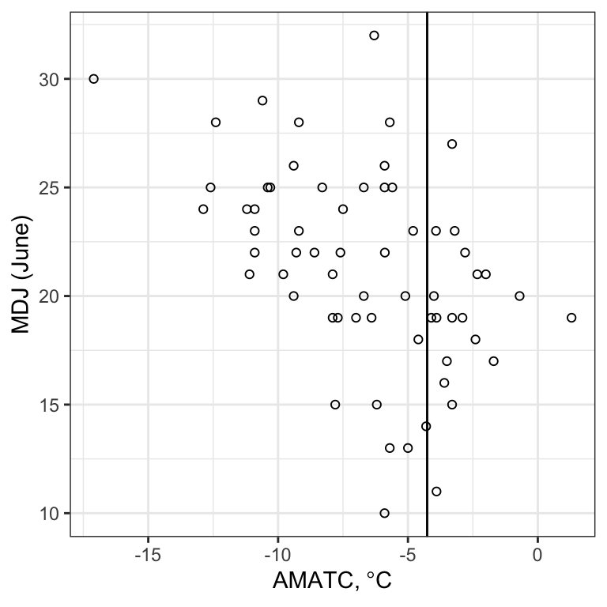
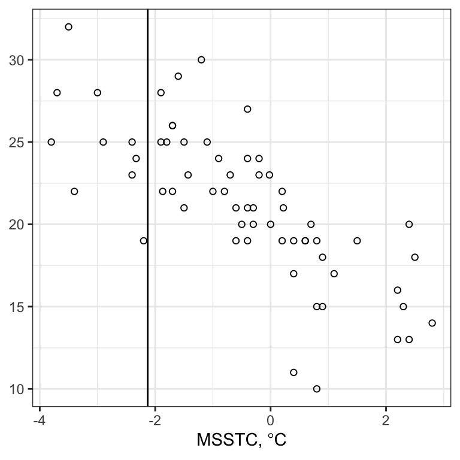
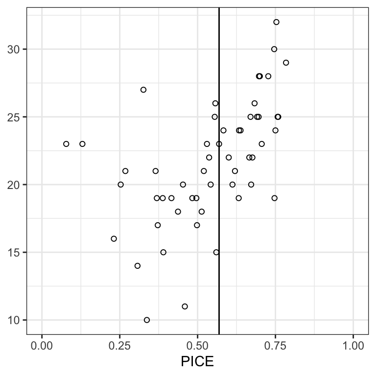
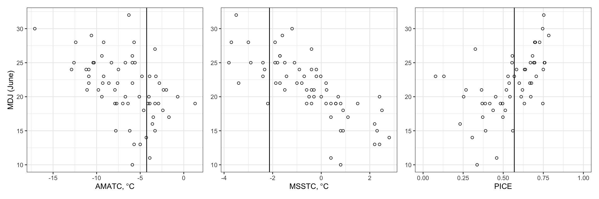
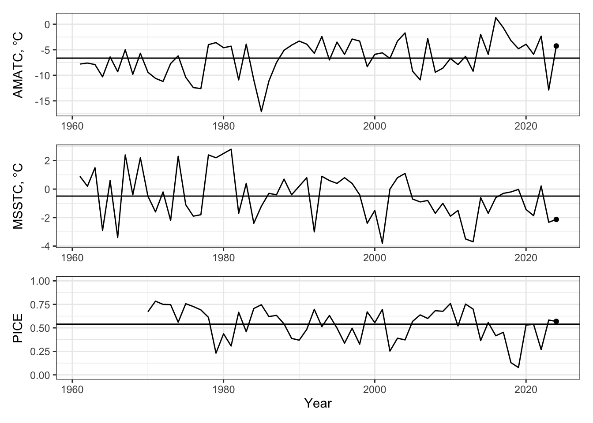
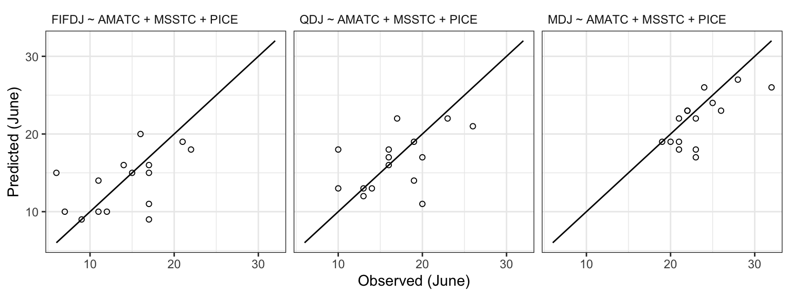
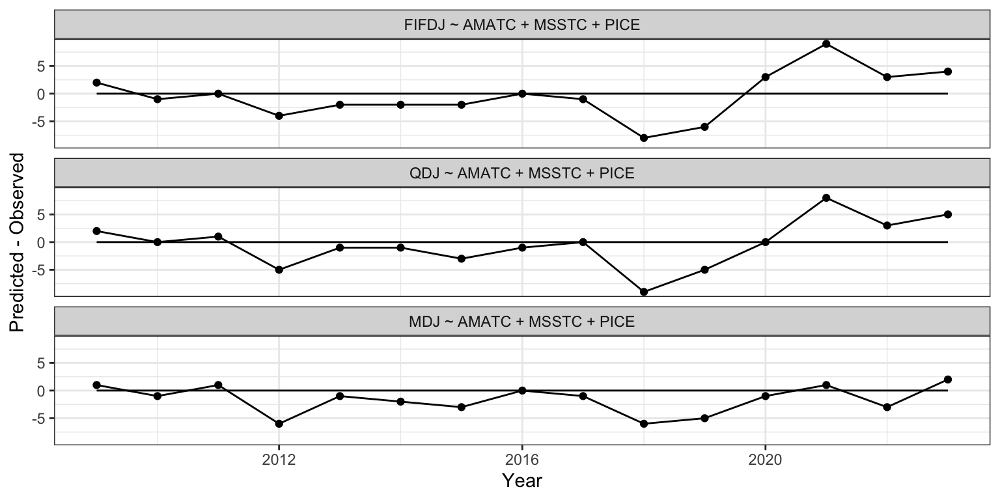
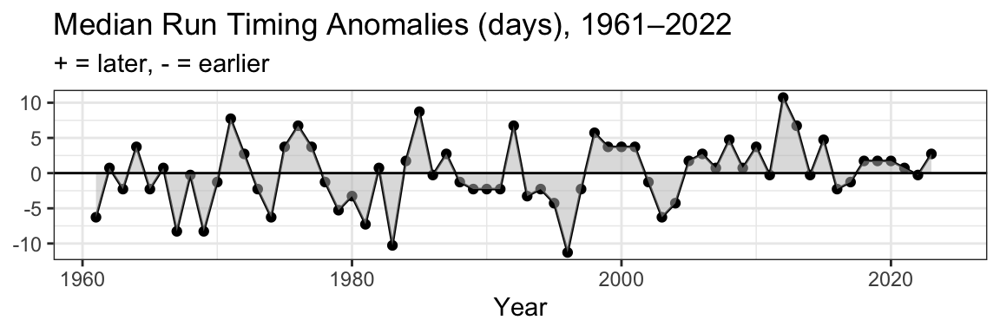

renv::activate()2024 Pre-Season Forecast
library(knitr)
library(dplyr)
library(ggplot2)
library(readr)
library(patchwork)
library(ggtext)forecast_year <- 2024
suppressWarnings({
dir.create("./figures")
dir.create("./output")
})
theme_set(theme_bw())Data
environment <- read_csv("../../data/data/environment/environment.csv")
cpue <- read_csv("../../data/data/cpue/cpue.csv")
yukon <- left_join(environment, cpue)Figures
MDJ vs. AMATC
p_amatc <- ggplot(yukon, aes(amatc, mdj)) +
geom_point(shape = 1) +
geom_vline(xintercept = yukon[which(yukon$year == forecast_year), "amatc"][[1]]) +
labs(x = expression("AMATC," * ~ degree * "C"), y = "MDJ (June)")
p_amatc
ggsave("./figures/mdj_against_amatc.png", width = 4, height = 4)MDJ vs. MSSTC
p_msstc <- ggplot(yukon, aes(msstc, mdj)) +
geom_point(shape = 1) +
geom_vline(xintercept = yukon[which(yukon$year == forecast_year), "msstc"][[1]]) +
labs(x = expression("MSSTC," * ~ degree * "C"), y = NULL)
p_msstc
ggsave("./figures/mdj_against_msstc.png", width = 4, height = 4)MDJ vs. PICE
p_pice <- ggplot(yukon, aes(pice, mdj)) +
geom_point(shape = 1) +
geom_vline(xintercept = yukon[which(yukon$year == forecast_year), "pice"][[1]]) +
scale_x_continuous(limits = c(0, 1.0)) +
labs(
x = "PICE",
y = NULL)
p_pice
ggsave("./figures/mdj_against_pice.png", width = 4, height = 4)Combined
p_all <- p_amatc + p_msstc + p_pice
p_all
ggsave("./figures/three_panel.png", width = 9, height = 3)Time series of AMATC, MSSTC, PICE
p1 <- ggplot(yukon, aes(year, amatc)) +
geom_line() +
geom_point(data = subset(yukon, year == forecast_year)) +
geom_hline(yintercept = mean(yukon[yukon$year < forecast_year, "amatc"][[1]])) +
labs(y = expression("AMATC," * ~ degree * "C")) +
theme(axis.title.x = element_blank())
p2 <- ggplot(yukon, aes(year, msstc)) +
geom_line() +
geom_point(data = subset(yukon, year == forecast_year)) +
geom_hline(yintercept = mean(yukon[yukon$year < forecast_year, "msstc"][[1]])) +
labs(y = expression("MSSTC," * ~ degree * "C")) +
theme(axis.title.x = element_blank())
p3 <- ggplot(yukon, aes(year, pice)) +
geom_line() +
geom_point(data = subset(yukon, year == forecast_year)) +
geom_hline(yintercept = mean(yukon[yukon$year < forecast_year, "pice"][[1]], na.rm = TRUE)) +
scale_y_continuous(limits = c(0, 1)) +
labs(
x = "Year",
y = "PICE"
)
timeseries_3p <- p1 / p2 / p3
timeseries_3p
ggsave("./figures/timseries_3p.png", timeseries_3p, width = 8, height = 6)Modeling
Model Selection
models <- c(
"mdj ~ amatc",
"mdj ~ msstc",
"mdj ~ pice",
"mdj ~ amatc + msstc",
"mdj ~ amatc + pice",
"mdj ~ msstc + pice",
"mdj ~ amatc + msstc + pice"
)
models[1] "mdj ~ amatc" "mdj ~ msstc"
[3] "mdj ~ pice" "mdj ~ amatc + msstc"
[5] "mdj ~ amatc + pice" "mdj ~ msstc + pice"
[7] "mdj ~ amatc + msstc + pice"Set up selection
hindcast_window <- 15 # last n years
hindcast_years <- seq(forecast_year - hindcast_window, forecast_year - 1)
round_method <- floor # Floor predictions
hindcast_year <- function(data, model, forecast_year) {
training_data <- data[data$year < forecast_year, ]
training_model <- lm(formula(model), training_data)
new_data <- data[data$year == forecast_year, ]
prediction <- predict(training_model, newdata = new_data, se.fit = TRUE)
prediction_fit <- round_method(prediction$fit[[1]])
prediction_interval <- prediction_fit + c(-2, 2) * qnorm(0.975) *
prediction$se.fit[[1]]
# Extract response
response_var = dimnames(attr(terms(as.formula(model)), "factors"))[[1]][1]
actual <- new_data[[response_var]]
in_interval <- actual >= round_method(prediction_interval[1]) &&
actual <= round_method(prediction_interval[2])
data.frame(
"formula" = model,
"year" = forecast_year,
"predicted" = (prediction_fit),
"observed" = actual,
"diff" = prediction_fit - actual,
"predict_se" = prediction$se.fit[[1]],
"in_interval" = in_interval,
"int_lower" = prediction_interval[1],
"int_upper" = prediction_interval[2],
"int_width" = prediction_interval[2] -
prediction_interval[1]
)
}
hindcast_model <- function(data, model, years, summarize = TRUE) {
result <- lapply(years, function(year) {
hindcast_year(data, model, year)
})
model_result <- do.call(rbind, result)
if (!summarize) {
return(model_result)
}
data.frame(
model = model,
"MAPE" = round(mean(abs(model_result$predicted - model_result$observed)), 2),
"SDMAPE" = round(sd(abs(model_result$predicted - model_result$observed)), 2),
"width" = round(mean(model_result$int_width), 2),
"p.in" = round(sum(model_result$in_interval) / length(model_result$in_interval), 2),
"absmax" = max(abs(model_result$predicted - model_result$observed)),
"meanbias" = round(mean(model_result$predicted - model_result$observed), 2)
)
}
hindcast_models <- function(data, models, years) {
result <- lapply(models, function(model) {
hindcast_model(data, model, years)
})
do.call(rbind, result)
}
model_selection_result <- hindcast_models(yukon, models, hindcast_years)
knitr::kable(model_selection_result)| model | MAPE | SDMAPE | width | p.in | absmax | meanbias |
|---|---|---|---|---|---|---|
| mdj ~ amatc | 4.20 | 2.86 | 6.26 | 0.47 | 12 | -4.07 |
| mdj ~ msstc | 1.60 | 1.50 | 4.39 | 0.67 | 5 | -0.67 |
| mdj ~ pice | 3.67 | 3.48 | 6.62 | 0.60 | 11 | -3.53 |
| mdj ~ amatc + msstc | 2.33 | 1.72 | 5.86 | 0.67 | 7 | -1.67 |
| mdj ~ amatc + pice | 3.87 | 3.20 | 8.31 | 0.47 | 10 | -3.73 |
| mdj ~ msstc + pice | 2.20 | 2.21 | 7.00 | 0.80 | 7 | -1.40 |
| mdj ~ amatc + msstc + pice | 2.27 | 1.94 | 8.21 | 0.87 | 6 | -1.60 |
write.csv(model_selection_result, file = "./output/model_select.csv")15%
model_fifdj <- lm(fifdj ~ amatc + msstc + pice, data = subset(yukon, year < forecast_year))
summary(model_fifdj)
Call:
lm(formula = fifdj ~ amatc + msstc + pice, data = subset(yukon,
year < forecast_year))
Residuals:
Min 1Q Median 3Q Max
-9.2630 -2.2695 0.4032 2.1583 6.4563
Coefficients:
Estimate Std. Error t value Pr(>|t|)
(Intercept) 8.9766 1.7287 5.193 3.81e-06 ***
amatc -0.5774 0.1693 -3.411 0.001290 **
msstc -1.3310 0.3709 -3.588 0.000756 ***
pice 0.7387 3.9179 0.189 0.851209
---
Signif. codes: 0 '***' 0.001 '**' 0.01 '*' 0.05 '.' 0.1 ' ' 1
Residual standard error: 3.4 on 50 degrees of freedom
(9 observations deleted due to missingness)
Multiple R-squared: 0.5474, Adjusted R-squared: 0.5202
F-statistic: 20.16 on 3 and 50 DF, p-value: 1.065e-08prediction_fifdj <- floor(predict(model_fifdj, newdata = yukon[yukon$year == forecast_year, ]))25%
model_qdj <- lm(qdj ~ amatc + msstc + pice, data = subset(yukon, year < forecast_year))
summary(model_qdj)
Call:
lm(formula = qdj ~ amatc + msstc + pice, data = subset(yukon,
year < forecast_year))
Residuals:
Min 1Q Median 3Q Max
-8.0734 -1.8937 0.2076 1.7164 6.6837
Coefficients:
Estimate Std. Error t value Pr(>|t|)
(Intercept) 11.6811 1.6376 7.133 3.72e-09 ***
amatc -0.4564 0.1604 -2.846 0.0064 **
msstc -1.5227 0.3514 -4.334 7.08e-05 ***
pice 1.5955 3.7114 0.430 0.6691
---
Signif. codes: 0 '***' 0.001 '**' 0.01 '*' 0.05 '.' 0.1 ' ' 1
Residual standard error: 3.221 on 50 degrees of freedom
(9 observations deleted due to missingness)
Multiple R-squared: 0.5743, Adjusted R-squared: 0.5488
F-statistic: 22.49 on 3 and 50 DF, p-value: 2.346e-09prediction_qdj <- floor(predict(model_qdj, newdata = yukon[yukon$year == forecast_year, ]))50%
model_mdj <- lm(mdj ~ amatc + msstc + pice, data = subset(yukon, year < forecast_year))
summary(model_mdj)
Call:
lm(formula = mdj ~ amatc + msstc + pice, data = subset(yukon,
year < forecast_year))
Residuals:
Min 1Q Median 3Q Max
-8.7758 -1.3693 0.2373 1.7350 6.6742
Coefficients:
Estimate Std. Error t value Pr(>|t|)
(Intercept) 18.4330 1.5118 12.192 < 2e-16 ***
amatc -0.2490 0.1480 -1.682 0.0987 .
msstc -1.8407 0.3244 -5.674 6.99e-07 ***
pice 1.0267 3.4264 0.300 0.7657
---
Signif. codes: 0 '***' 0.001 '**' 0.01 '*' 0.05 '.' 0.1 ' ' 1
Residual standard error: 2.974 on 50 degrees of freedom
(9 observations deleted due to missingness)
Multiple R-squared: 0.5904, Adjusted R-squared: 0.5659
F-statistic: 24.03 on 3 and 50 DF, p-value: 9.061e-10prediction_mdj <- floor(predict(model_mdj, newdata = yukon[yukon$year == forecast_year, ]))predictions <- data.frame(
percentile = c("fifdj", "qdj", "mdj"),
prediction = as.integer(c(
prediction_fifdj,
prediction_qdj,
prediction_mdj
))
)
write_csv(predictions, file = "./output/predictions.csv")
kable(predictions)| percentile | prediction |
|---|---|
| fifdj | 14 |
| qdj | 17 |
| mdj | 23 |
Historical Comparisons
Long Term Means
long_term_means <- data.frame(
variable = c("AMATC", "MSSTC", "PICE", "FIFDJ", "QDJ", "MDJ"),
current_year_value = c(
mean(yukon$amatc[which(yukon$year == forecast_year)]),
mean(yukon$msstc[which(yukon$year == forecast_year)]),
mean(yukon$pice[which(yukon$year == forecast_year)], na.rm = TRUE),
mean(yukon$fifdj[which(yukon$year == forecast_year)]),
mean(yukon$qdj[which(yukon$year == forecast_year)]),
mean(yukon$mdj[which(yukon$year == forecast_year)])
),
long_term_mean = c(
mean(yukon$amatc[which(yukon$year < forecast_year)]),
mean(yukon$msstc[which(yukon$year < forecast_year)]),
mean(yukon$pice[which(yukon$year < forecast_year)], na.rm = TRUE),
mean(yukon$fifdj[which(yukon$year < forecast_year)]),
mean(yukon$qdj[which(yukon$year < forecast_year)]),
mean(yukon$mdj[which(yukon$year < forecast_year)])
)
)
long_term_means$cur_minus_ltm <- long_term_means$current_year_value - long_term_means$long_term_mean
long_term_means$range <- c(
paste(range(yukon$amatc[which(yukon$year < forecast_year)]), collapse = " to "),
paste(range(yukon$msstc[which(yukon$year < forecast_year)]), collapse = " to "),
paste(range(yukon$pice[which(yukon$year < forecast_year)], na.rm = TRUE), collapse = " to "),
paste(range(yukon$fifdj[which(yukon$year < forecast_year)]), collapse = " to "),
paste(range(yukon$qdj[which(yukon$year < forecast_year)]), collapse = " to "),
paste(range(yukon$mdj[which(yukon$year < forecast_year)]), collapse = " to ")
)
kable(long_term_means)| variable | current_year_value | long_term_mean | cur_minus_ltm | range |
|---|---|---|---|---|
| AMATC | -4.260 | -6.6368254 | 2.3768254 | -17.1 to 1.3 |
| MSSTC | -2.130 | -0.4909365 | -1.6390635 | -3.8 to 2.8 |
| PICE | 0.569 | 0.5395741 | 0.0294259 | 0.078 to 0.784 |
| FIFDJ | NA | 13.7936508 | NA | 5 to 23 |
| QDJ | NA | 16.1587302 | NA | 6 to 26 |
| MDJ | NA | 21.2698413 | NA | 10 to 32 |
long_term_timing_means <- data.frame(
fifdj = mean(yukon$fifdj, na.rm = TRUE),
qdj = mean(yukon$qdj, na.rm = TRUE),
mdj = mean(yukon$mdj, na.rm = TRUE))
kable(long_term_timing_means)| fifdj | qdj | mdj |
|---|---|---|
| 13.79365 | 16.15873 | 21.26984 |
Hindcast all three models
hindcast_fifdj <- hindcast_model(yukon, "fifdj ~ amatc + msstc + pice", hindcast_years)
hindcast_qdj <- hindcast_model(yukon, "qdj ~ amatc + msstc + pice", hindcast_years)
hindcast_mdj <- hindcast_model(yukon, "mdj ~ amatc + msstc + pice", hindcast_years)
hindcast_all_percentiles <- rbind(
hindcast_fifdj,
hindcast_qdj,
hindcast_mdj)
write_csv(hindcast_all_percentiles, "output/hindcast_all_models.csv")
kable(hindcast_all_percentiles)| model | MAPE | SDMAPE | width | p.in | absmax | meanbias |
|---|---|---|---|---|---|---|
| fifdj ~ amatc + msstc + pice | 3.13 | 2.70 | 8.37 | 0.87 | 9 | -0.33 |
| qdj ~ amatc + msstc + pice | 2.93 | 2.89 | 7.84 | 0.73 | 9 | -0.40 |
| mdj ~ amatc + msstc + pice | 2.27 | 1.94 | 8.21 | 0.87 | 6 | -1.60 |
hindcast_models <- c(
"fifdj ~ amatc + msstc + pice",
"qdj ~ amatc + msstc + pice",
"mdj ~ amatc + msstc + pice"
)
hindcast <- do.call(rbind, lapply(hindcast_models, function(model) {
hindcast_model(yukon, model, hindcast_years, summarize = FALSE)
}))
hindcast$formula <- toupper(hindcast$formula)
hindcast$formula <- ordered(hindcast$formula, c(
"FIFDJ ~ AMATC + MSSTC + PICE",
"QDJ ~ AMATC + MSSTC + PICE",
"MDJ ~ AMATC + MSSTC + PICE"
))
predicted_vs_observed <- ggplot(hindcast, aes(observed, predicted)) +
geom_point(shape = 1) +
scale_shape_manual(values = c(1, 19)) +
facet_wrap(~ formula) +
annotate(
geom = "segment",
x = min(c(hindcast$observed, hindcast$predicted)),
y = min(c(hindcast$observed, hindcast$predicted)),
xend = max(c(hindcast$observed, hindcast$predicted)),
yend = max(c(hindcast$observed, hindcast$predicted))
) +
labs(
x = "Observed (June)",
y = "Predicted (June)" ) +
theme(strip.background = element_rect(fill=NA, colour=NA),
strip.text = element_text(hjust = 0))
ggsave("figures/predicted_vs_observed.png",
predicted_vs_observed,
width = 8,
height = 3
)
predicted_vs_observed
forecast_timeseries <- ggplot(hindcast, aes(year, diff)) +
geom_line() +
geom_point() +
facet_wrap(~ formula, ncol = 1) +
annotate(geom = "segment", x = min(hindcast$year), xend = max(hindcast$year), y = 0, yend = 0) +
labs(
x = "Year",
y = "Predicted - Observed"
)
forecast_timeseries
Long-term summaries
Median dates over time
yukon <- yukon %>% mutate(diff = mdj - mean(mdj, na.rm = TRUE))
ggplot(data = yukon, aes(year, diff)) +
geom_line() +
geom_point() +
geom_ribbon(aes(ymin = 0, ymax = diff), fill = "gray", alpha = 0.5) +
geom_hline(yintercept=0) +
xlab("Year") +
ylab(NULL) +
ggtitle("Median Run Timing Anomalies (days), 1961–2022",
subtitle = "+ = later, - = earlier")